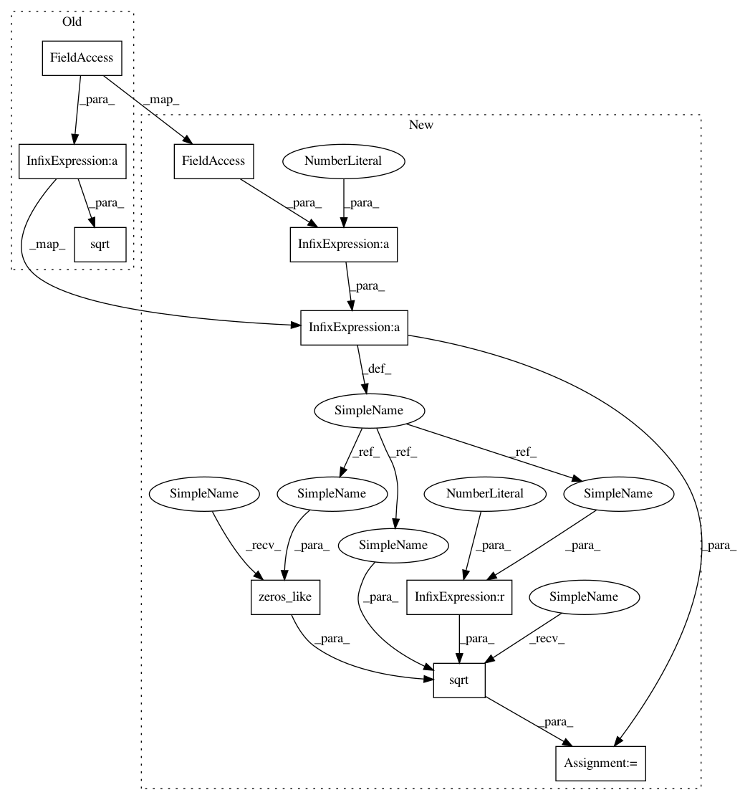

e729606d6f2ae2e91574857878a87f40c600f88d,src/skmultiflow/trees/multi_target_regression_hoeffding_tree.py,MultiTargetRegressionHoeffdingTree,normalize_sample,#MultiTargetRegressionHoeffdingTree#Any#,475
Before Change
mean = self.sum_of_attribute_values / self.examples_seen
sd = np.sqrt((self.sum_of_attribute_squares -
(self.sum_of_attribute_values ** 2) /
self.examples_seen) / self.examples_seen)
normalized_sample = np.zeros(X.shape[0] + 1, dtype=np.float64)
np.divide(X - mean, sd, where=sd != 0, out=normalized_sample[:-1])
// Augments sample with the bias input signal (or y intercept for
After Change
return np.zeros((c + 1), dtype=np.float64)
mean = self.sum_of_attribute_values / self.examples_seen
variance = (self.sum_of_attribute_squares -
(self.sum_of_attribute_values ** 2) /
self.examples_seen) / (self.examples_seen - 1)
sd = np.sqrt(variance, out=np.zeros_like(variance),
where=variance >= 0.0)
normalized_sample = np.zeros(X.shape[0] + 1, dtype=np.float64)
np.divide(X - mean, sd, where=sd != 0, out=normalized_sample[:-1])
// Augments sample with the bias input signal (or y intercept for
// each target)
In pattern: SUPERPATTERN
Frequency: 3
Non-data size: 10
Instances
Project Name: scikit-multiflow/scikit-multiflow
Commit Name: e729606d6f2ae2e91574857878a87f40c600f88d
Time: 2018-10-08
Author: saulomastelini@gmail.com
File Name: src/skmultiflow/trees/multi_target_regression_hoeffding_tree.py
Class Name: MultiTargetRegressionHoeffdingTree
Method Name: normalize_sample
Project Name: scikit-multiflow/scikit-multiflow
Commit Name: e729606d6f2ae2e91574857878a87f40c600f88d
Time: 2018-10-08
Author: saulomastelini@gmail.com
File Name: src/skmultiflow/trees/multi_target_regression_hoeffding_tree.py
Class Name: MultiTargetRegressionHoeffdingTree
Method Name: predict
Project Name: scikit-multiflow/scikit-multiflow
Commit Name: e729606d6f2ae2e91574857878a87f40c600f88d
Time: 2018-10-08
Author: saulomastelini@gmail.com
File Name: src/skmultiflow/trees/multi_target_regression_hoeffding_tree.py
Class Name: MultiTargetRegressionHoeffdingTree
Method Name: normalized_target_value